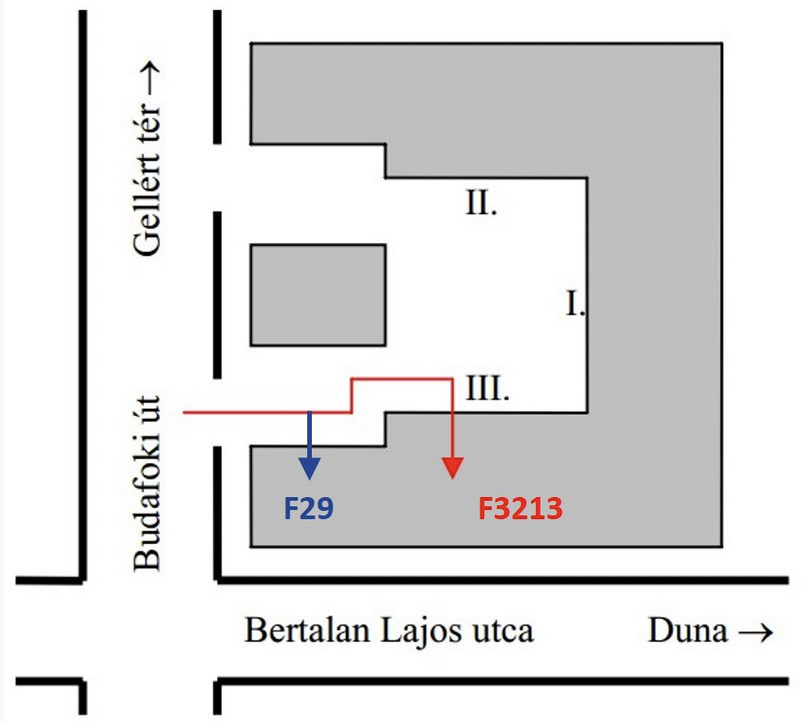

2024.05.30. Talk with Viktor Toth, neuroscientist #3
You can access both presentations below:
Presentation of Viktor Tóth: link
Presentation of Csanád Budai and Tamás Széles: link
How to get there
F3213

After partyAgenda
- 17:00 - 17:20 - Arrival and Registration
- 17:20 - 17:40 - Csanád Budai and Tamás Széles's presentation about their work (Self-Driving Sports Car Development)
- 17:40 - 17:50 - Short Break
- 17:50 - 18:40 - Talk with Viktor Toth about AI and how he teached rats and more.
- 19:00 - 22:00 - Pizza, Drinks and Talk @ mesh. Base (2 min walk)
- 22:00 - ... - Potential After Party
Archive
2024.04.25. - VISIONary Hackathon
Agenda
- 16:30 - 17:00 - Regisztráció
- 17:00 - 17:30 - Apple Vision Pro ismertetése
- 17:30 - 17:45 - Csoportok kialakítása
- 17:45 - 21:30 - Dolgozás a projekt terven, és Apple Vision Pro kipróbálás
- 21:30 - 22:00 - Zárás
Mire készülj
Az Apple Vision próbálásra itt kell jelentkezni: FormCél
- Az esemény végére minden csapatnak kell készítenie egy tervet, ami értékelésre kerül
- Bemutatni az Apple Vision Pro-t
- Jól érezni magunkat
- Étel és ital
- Apple Vision Pro próba (erre itt kell jelentkezni: Form)
- Tenni vágyó emberek
- Tágas helyszín
- Apple Vision Pro-ra buildelés
- Éjszakai program
- Unalmas előadások
- Laptop
- Ötletek
- Érdeklődés
Problémák
A hackathonon több problémára is keresünk megoldást. Az egyetlen kitétel az Apple Vision Pro használata a megoldás közben. Az esemény elején ezeket ismertetjük, és 2-5 fős csapatokban dolgozunk rajtuk. A versenynek a célja, hogy a végére egy olyan tervet mutassatok be, ami tartalmaz egy
- Problémát - ami nehézséget, feleslegességet okoz az életben.
- Megoldási tervet - a tervnek nem kell kész terméknek lennie, de a megvalósításnak reálisnak kell lennie
- Szükséges eszközöket - legyen ez anyag, gép, szakértelem, etc.
2024.04.04. - VISIONary Hackathon
Agenda
- 16:30 - 17:00 - Regisztráció
- 17:00 - 17:30 - Vízió ismertetése
- 17:30 - 17:45 - Csoportok kialakítása
- 17:45 - 21:30 - Dolgozás a projekt terven, és Apple Vision Pro kipróbálás
- 21:30 - 22:00 - Zárás
Mire készülj
Cél
- Az esemény végére minden csapatnak kell készítenie egy tervet, ami értékelésre kerül
- Bemutatni az Apple Vision Pro-t
- Jól érezni magunkat
- Étel és ital
- Apple Vision Pro próba
- Tenni vágyó emberek
- Tágas helyszín
- Apple Vision Pro-ra buildelés
- Éjszakai program
- Unalmas előadások
- Laptop
- Ötletek
- Érdeklődés
Problémák
A hackathonon több problémára is keresünk megoldást. Az esemény elején ezeket ismertetjük, és 2-5 fős csapatokban dolgozunk rajtuk. A versenynek a célja, hogy a végére egy olyan tervet mutassatok be, ami
- Célzott - A tervnek valóban a problémára kell megoldást nyújtania
- Megvalósítható - A tervnek nem kell kész terméknek lennie, de a megvalósításnak reálisnak kell lennie
- Új - A tervnek valami újat kell hoznia, vagy valami meglévőt kell jobbá tennie